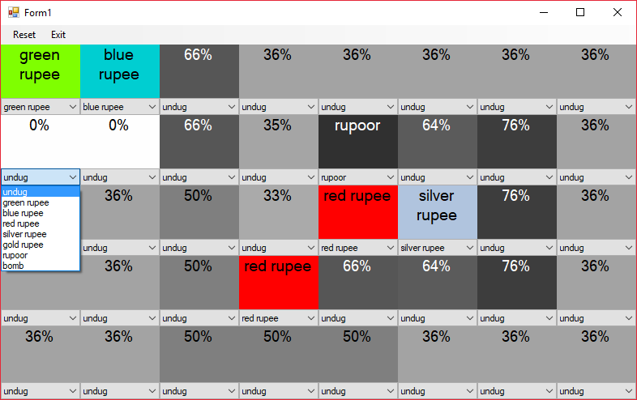

Zelda Thrill Digger Assistant
Game Overview
Thrill Digger is a minigame from The Legend of Zelda: Skyward Sword that is similar to Minesweeper. The goal is to dig up as many rupees (money) as possible without digging up a bomb. In addition to bombs, there are rupoors which are equivalent to negative rupees, however only bombs can end the game.
The type of the rupee dug up indicates how many bombs and rupoors are adjacent. The number of spots indicated is as follows:
- Green Rupee: 0 spots
- Blue Rupee: 1-2 spots
- Red Rupee: 3-4 spots
- Silver Rupee: 5-6 spots
- Gold Rupee: 7-8 spots
There are three levels of difficulty: Beginner, Imtermediate, and Expert. Expert was the level that I focused on for this project. It has a 5x8 playing field with 8 bombs and 8 rupoors.
Implementation Description
The program was written in C++ with the GUI made using Windows Forms. The code can be found on Github here.
The program starts as a 5x8 grid of drop down boxes each with undug selected. As the player starts uncovering rupees in the game, they can put what they found into the respective drop down. The program will then calculate the likelihood that there is something bad in each spot. It then writes that percentage in each box and colors it accordingly. The player can use this information to choose the least likely box to have a bad object in it.
Algorithm Description
The algorithm solves a Constraint Satisfaction Problem (CSP) to determine probablities. I learned the basic steps to solve such a problem with help from this paper. It describes a how to solve a CSP to play minesweeper. However due to the differences in the games, I had to make many changes. Following is a description of my algorithm used in my program.
Step 1: Generate constraints
Each spot that contains a rupee generates a constraint. For example, if a blue rupee is uncovered in the upper right corner, then the constraint is that there are 1-2 bad things amongst the coordinates (0,1), (1,0), and (1,1). As long as the constraint isn't empty (i.e. not all neighboring spaces revealed) it is pushed to the back of a vector of constraints.
Step 2: Build coupled subset of constraints
The constraints are then divided into coupled subsets. Constraints are coupled if they share an undug neighbor.
Step 3: Count vaild solutions per subset
A depth-first search is performed on each coupled subset. At each traversal, the constraints are checked to ensure that the state is valid. Once every space in subset is assigned, the solution is checked to make sure there are less than 16 bombs and rupoors. If valid, the locations of the bad items are recorded along with the number bad items.
Step 4: Remove invaild solution sets
Even though we made sure each individual subset is vaild, some of those solutions migth be invalid given all other possible solutions of the other subsets. This occurs when the total number of bad items uncovered minus the minimum number of bad items needed by the other subsets exceeds the number of bad items needed the current solution. All solutions that violate that condition are removed.
Step 5: Calculate percentages
Finally, we calculate the probablity that a bad item is located at each space. For each location that is contained in a subset, this is simply done by calculating the ratio between number of solutions containing a bad item and the total number of solutions. The rest of the probablities are determine by taking 16 minus the avgerage amount of bad items used so far divided by the number of unconstrained locations.